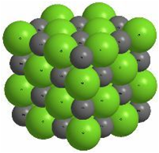

Módulo 1
Conceptos
La química inorgánica es la rama de la química que se encarga del estudio de la formación, composición, estructura y reacciones químicas de los elementos y compuestos que no poseen enlaces carbono-hidrógeno, es decir, que no son compuestos orgánicos. Esta disciplina abarca una vasta gama de sustancias, incluyendo metales, minerales, sales, y gases, fundamentales en procesos industriales, biológicos y geológicos. Es crucial para entender fenómenos como la corrosión, la catálisis y la electroquímica. La palabra inorgánicos se refiere a estos compuestos y sus propiedades.
